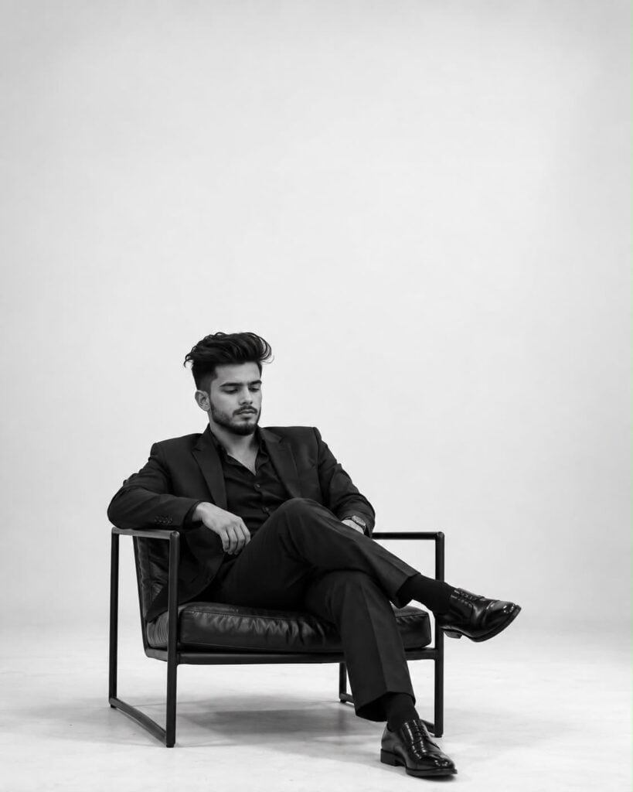
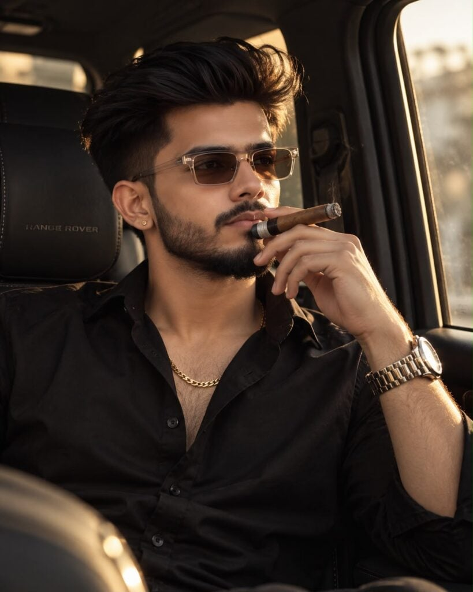
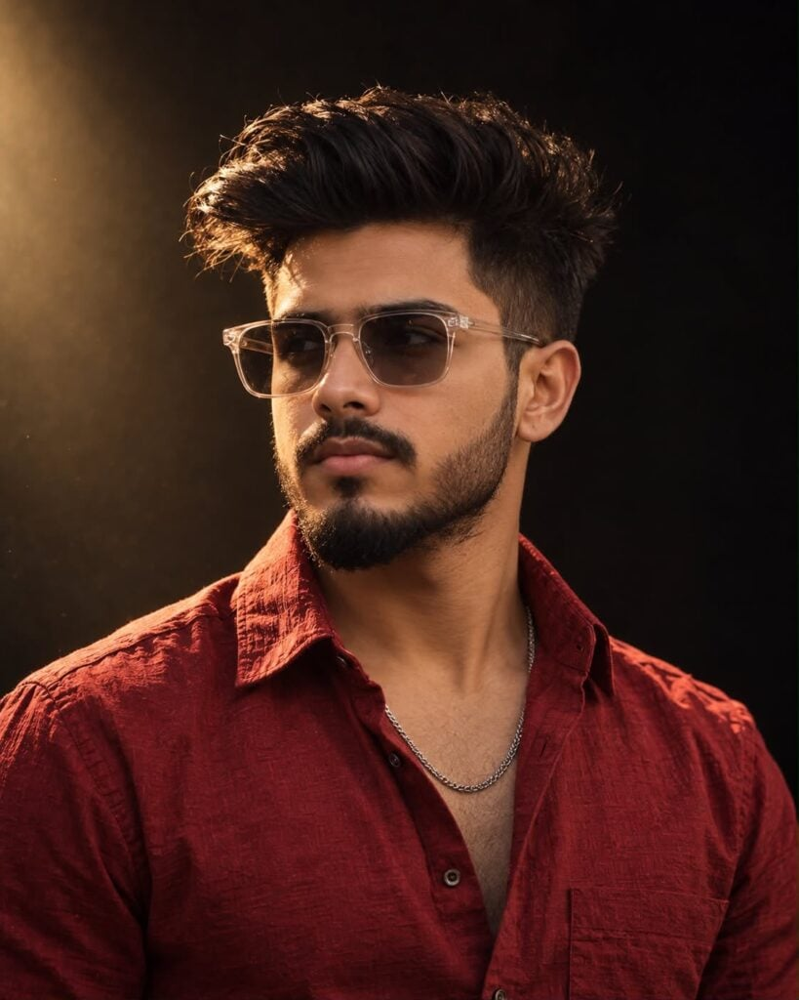
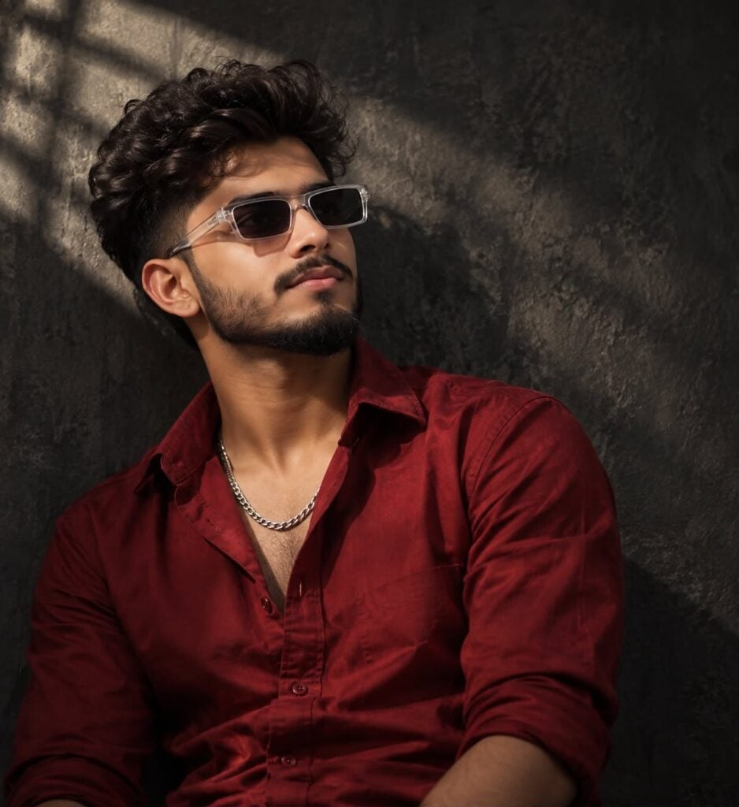
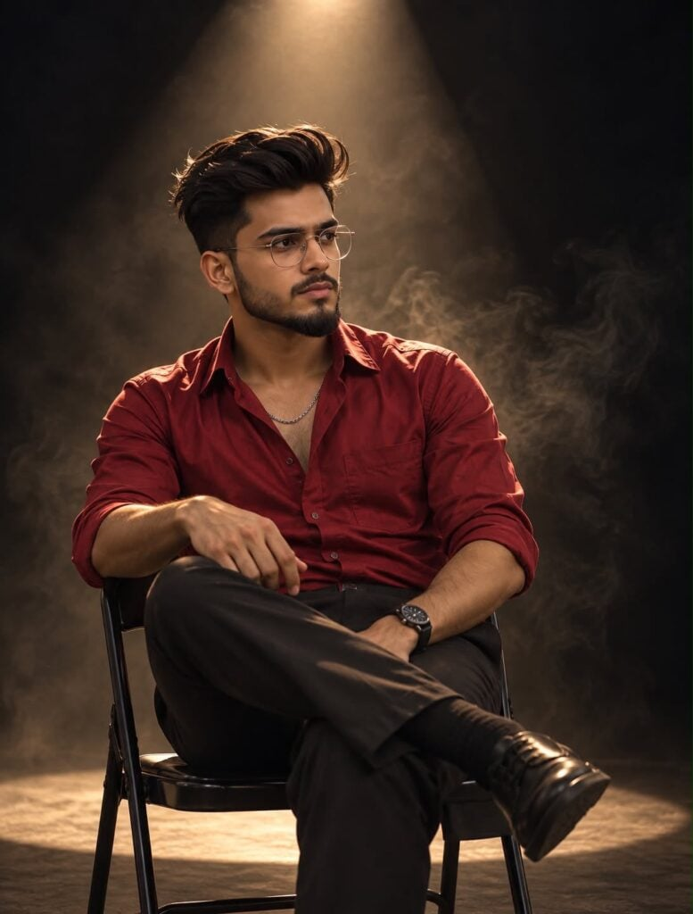

Looking for the best aesthetic photo editing prompts for boys to create stylish profile pictures and Instagram Stories? AI photo editing has made it easy to transform an ordinary photo into a professional-looking portrait with just a good prompt and a reference image.
Want more awesome prompts?
Join our community and get the latest viral prompts daily.
Follow on Instagram




In this article, you’ll find 21+ aesthetic photo editing prompts for boys that you can use with AI image-generation and photo-editing tools. These prompts are designed for different moods, including cinematic, luxury, dark, casual, fashion, and Instagram-style portraits.
How to Use These Aesthetic Photo Prompts
Using these prompts is simple. First, choose a clear photo where your face is visible. Upload it to your preferred AI photo editor, then copy and paste one of the prompts below.
For the most natural result, add your photo as a face reference when the tool supports it. This helps maintain important facial characteristics while changing the background, clothing, lighting, and overall atmosphere.
You can also change small details such as the shirt color, glasses, hairstyle, or background to match your personal style.
1. Dark Cinematic Portrait
Create an ultra-realistic cinematic portrait of a stylish young man with textured dark hair, a trimmed beard, and a serious expression. Use dramatic shadows, warm golden lighting, a black studio background, shallow depth of field, and professional fashion photography.
2. Maroon Shirt Aesthetic
Create a premium fashion portrait of a young South Asian man wearing a deep maroon textured shirt and silver chain. Add warm side lighting, realistic skin texture, a dark background, cinematic shadows, and an editorial photography look.
3. Golden Spotlight
Place the subject in a dark studio under a focused golden overhead spotlight. Add subtle atmospheric haze, strong rim lighting, deep shadows, and a cinematic film-still appearance.
4. Instagram Profile Portrait
Create a clean, stylish chest-up portrait with a dark background, soft cinematic lighting, sharp facial details, and a confident neutral expression. Keep the composition suitable for an Instagram profile picture.
5. Luxury Fashion Look
Transform the photo into a high-end fashion editorial portrait with premium lighting, sophisticated styling, realistic textures, and cinematic color grading.
6. Moody Black Background
Create a mysterious portrait against an almost completely black background with subtle warm highlights falling across the face.
7. Sunglasses Portrait
Add stylish transparent-frame sunglasses while maintaining realistic facial proportions, natural skin texture, and a premium cinematic appearance.
8. Smoke Studio Effect
Create a dramatic studio portrait surrounded by subtle smoke and atmospheric haze illuminated by warm golden light.
9. Casual Instagram Story
Create a relaxed fashion portrait with natural lighting, modern clothing, soft background blur, and a stylish Instagram Story aesthetic.
10. Black Outfit Aesthetic
Dress the subject in a sophisticated black outfit and create a dark editorial environment with dramatic lighting.
11. Red Shirt Portrait
Create a bold portrait featuring a textured red shirt, cinematic lighting, realistic skin, and a dark luxury background.
12. Vintage Film Look
Give the image a subtle vintage film aesthetic with warm tones, natural grain, soft highlights, and cinematic contrast.
13. Minimal Studio Portrait
Use a simple dark studio background, soft directional lighting, clean composition, and realistic professional photography.
14. Street Fashion
Create a stylish street-fashion portrait with urban surroundings, shallow depth of field, natural shadows, and modern color grading.
15. Night Aesthetic
Create a nighttime portrait with subtle city lights in the background, cinematic bokeh, and a cool-moody atmosphere.
16. Soft Golden Light
Use soft golden-hour lighting across the face with natural skin tones and a blurred background.
17. Serious Profile Look
Create a three-quarter profile portrait with the subject looking off-camera and maintaining a serious, thoughtful expression.
18. Luxury Car Aesthetic
Place the subject beside a premium classic car with cinematic lighting, elegant styling, and a sophisticated editorial atmosphere.
19. Dark Red Editorial
Create a fashion editorial portrait using deep red clothing, warm highlights, dramatic shadows, and a premium magazine-style finish.
20. Clean DP Portrait
Create a sharp and clean portrait optimized for a social media DP, with excellent facial detail, subtle background blur, and balanced lighting.
21. Cinematic Smoke Portrait
Create an ultra-realistic cinematic portrait surrounded by atmospheric smoke, warm rim lighting, deep shadows, realistic hair strands, and professional DSLR-style depth of field.
22. Dramatic Fashion Portrait
Create a high-impact fashion portrait with strong facial definition, dramatic chiaroscuro lighting, premium textures, and cinematic color grading.
Tips for Better AI Photo Editing Results
For the best results, always start with a clear, high-resolution photo. Avoid images where the face is heavily covered or blurred. If the AI tool provides a reference-image option, use your original photo to help preserve your appearance.
You can also experiment with different lighting styles and backgrounds. A dark background works especially well for cinematic profile pictures, while brighter environments can be better for Instagram Stories.
Final Words
These 21+ aesthetic photo editing prompts for boys are perfect for creating fresh profile pictures, Instagram Stories, fashion portraits, and cinematic social media photos. You don’t need professional photography equipment—just a good reference photo and the right AI prompt.
Try different prompts and customize the clothing, lighting, background, and mood until you find a style that matches your personality.